Selamat datang di 123 Phone Repair, tempat di mana masalah handphone Anda diselesaikan dengan cepat dan profesional. Kami adalah ahli dalam perbaikan segala jenis kerusakan handphone, mulai dari layar retak hingga masalah perangkat lunak. Dengan tim teknisi yang berpengalaman dan menggunakan teknologi terkini, kami berkomitmen untuk memberikan pelayanan terbaik kepada pelanggan kami. Setiap perangkat yang masuk ke tangan kami akan diperiksa dengan teliti, diperbaiki dengan cermat, dan dikembalikan dalam kondisi optimal. Keunggulan kami tidak hanya terletak pada kualitas perbaikan, tetapi juga pada kecepatan layanan. Kami memahami betapa pentingnya handphone dalam kehidupan sehari-hari, itulah mengapa kami berusaha untuk menyelesaikan setiap perbaikan dengan cepat tanpa mengorbankan kualitas.
Daftar Harga Service

Kami menyediakan layanan perbaikan handphone dengan harga yang terjangkau dan kompetitif, serta suku cadang dengan harga terbaik di pasaran. Percayakan perbaikan handphone Anda kepada kami tanpa khawatir mengenai biaya yang mahal.
| No | Jenis Jasa | Harga |
|---|---|---|
| 1 | Pengecekan | Gratis |
| 2 | Service | HUB WA |
Pemesanan Produk

Jika Anda tertarik dengan produk dan jasa kami, untuk pemesanan klik disini.
Dokumentasi
Berikut dokumentasi dari kegiatan yang ada pada produk kami.
Foto Kegiatan
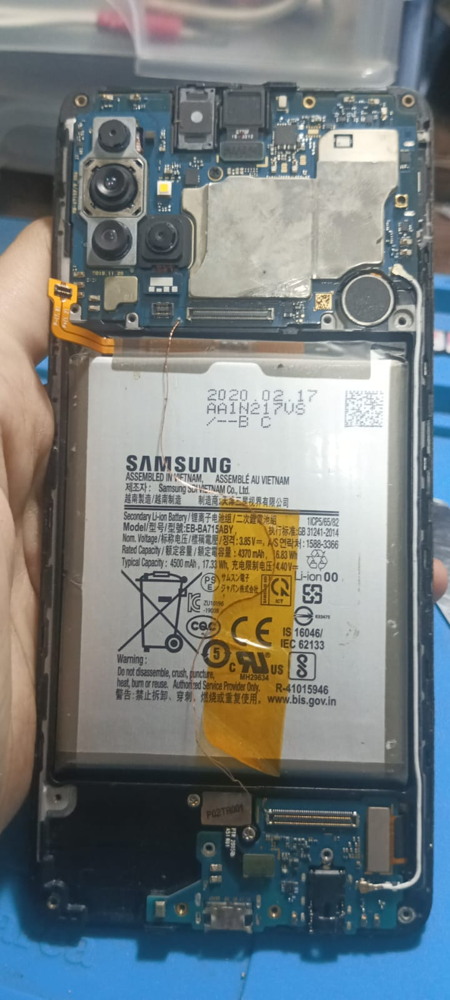 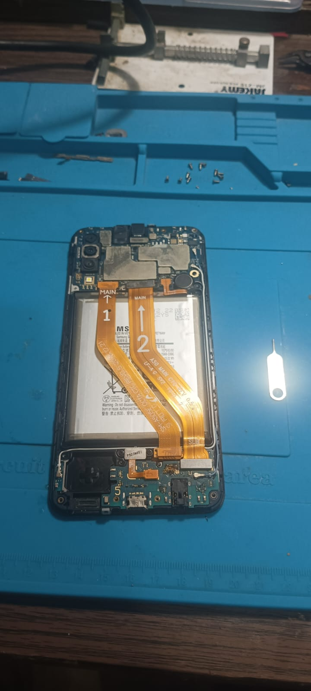 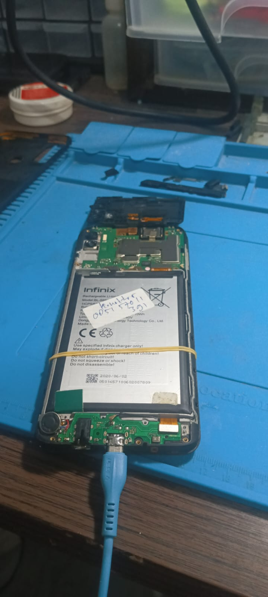 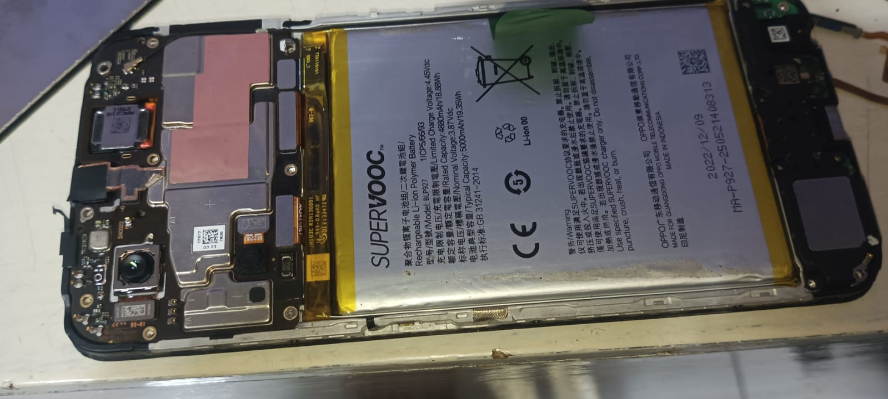 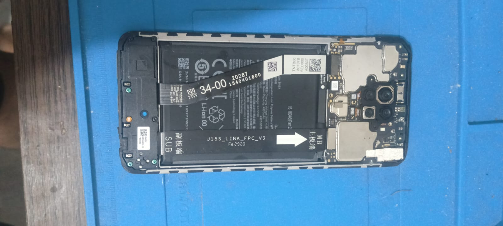 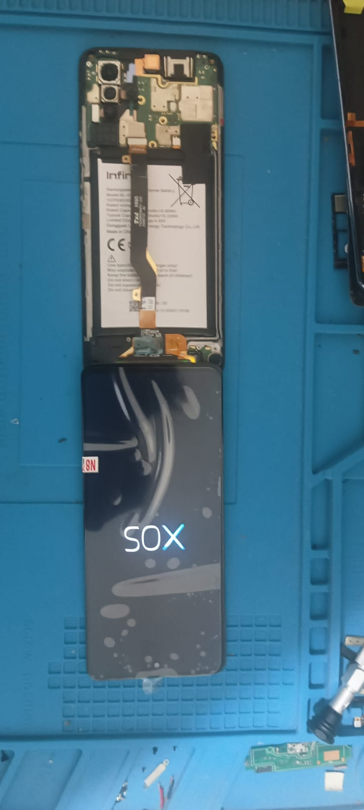 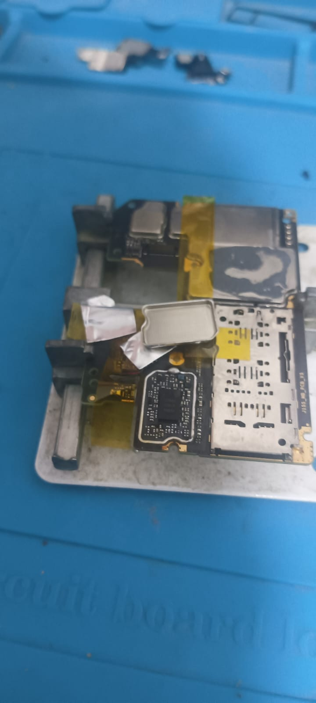 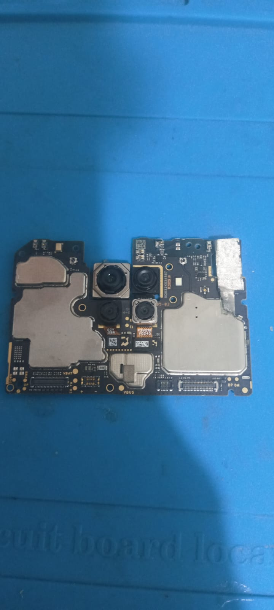 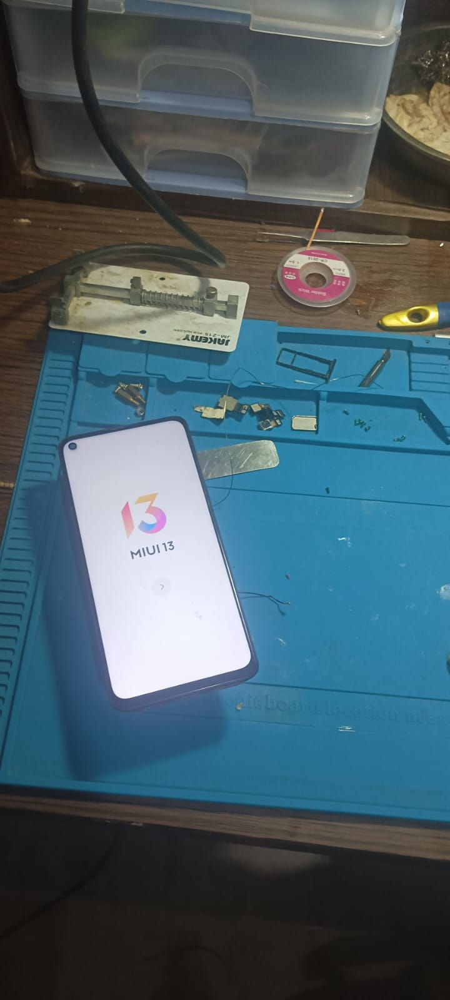 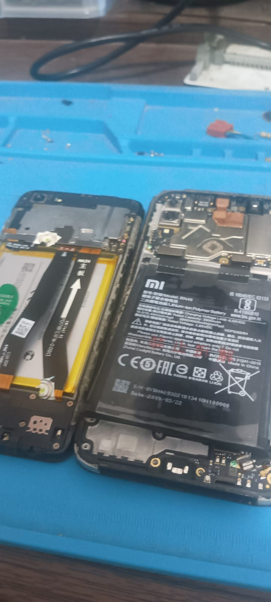 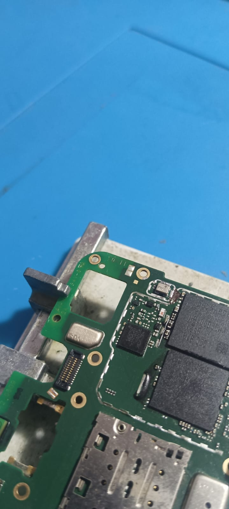Testimoni
“Awalnya saya agak ragu untuk memilih jasa konstruksi secara random tanpa referensi. Tapi setelah saya mendapatkan penawaran dan melihat pengerjaan yang sudah dilakukan, saya sangat puas dengan service yang diberikan. Harganya reasonable, pengerjaannya sangat tepat waktu, kualitas pekerjaan juga sangat baik dan detail. Saya merekomendasikan jasa dari Re-Electronic dan jika ada service yang dibutuhkan lagi, pasti saya akan menghubungi mereka. Mudah-mudahan service dan kualitas tetap dijaga.” -Jokowi dodo
"Tidak ada yang lebih mengganggu daripada handphone rusak, tetapi berkat 123 Phone Repair, saya bisa kembali menggunakan handphone saya seperti semula dalam waktu singkat. Layanan mereka sangat profesional dan saya sangat merekomendasikan kepada siapa pun yang membutuhkan perbaikan handphone." - Anies Baswedan
"Saya sudah beberapa kali menggunakan jasa perbaikan handphone dari 123 Phone Repair, dan saya selalu puas dengan hasilnya. Mereka menggunakan suku cadang yang berkualitas dan teknisi mereka sangat terampil dalam menangani berbagai masalah handphone. Layanan yang luar biasa!" - Prabowo Subianto
"Sebagai pengguna handphone yang sering mengalami masalah, saya sangat bersyukur mengetahui tentang 123 Phone Repair. Mereka tidak hanya menawarkan harga yang terjangkau, tetapi juga memberikan layanan yang sangat baik. Saya sangat merekomendasikan kepada semua orang yang membutuhkan perbaikan handphone!" - Ganjar Pranowo